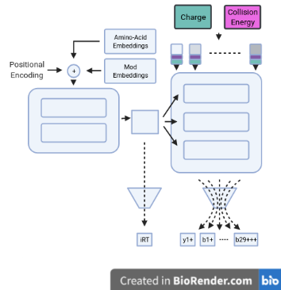

ElFragmentador
ElFragmentador
This repository attempts to implement a neural net that leverages the transformer architecture to predict peptide properties (retention time and fragmentation).

Usage
Please check out The Quickstart guide for usage instructions.
Why transformers?
Because we can... Just kidding
The transformer architecture provides several benefits over the standard approach on fragment prediction (LSTM/RNN). On the training side it allows the parallel computation of whole sequences, whilst in LSTMs one element has to be passed at a time. In addition it gives the model itself a better chance to study the direct interactions between the elements that are being passed.
On the other hand, it allows a much better interpretability of the model, since the 'self-attention' can be visualized on the input and in that way see what the model is focusing on while generating the prediction.
Inspiration for this project
Many of the elements from this project are actually a combination of the principles shown in the Prosit paper and the Skyline poster on some of the elements to encode the peptides and the output fragment ions.
On the transformer side of things I must admit that many of the elements of this project are derived from DETR: End to end detection using transformers in particular the trainable embeddings as an input for the decoder and some of the concepts discussed about it on Yannic Kilcher's Youtube channel (which I highly recommend).
Why the name?
Two main reasons ... it translates to 'The fragmenter' in spanish and the project intends to predict fragmentation. On the other hand ... The name was free in pypi.
Resources on transformers
- An amazing illustrated guide to understand the transformer architecture: http://jalammar.github.io/illustrated-transformer/
- Full implementation of a transformer in pytorch with the explanation of each part: https://nlp.seas.harvard.edu/2018/04/03/attention.html
- Official pytorch implementation of the transformer: https://pytorch.org/docs/stable/generated/torch.nn.Transformer.html
How fast is it?
You can check how fast the model is in you specific system. Right now the CLI tests the speed only on CPU (the model can be run in GPU).
Here I will predict the fasta file for SARS-COV2
poetry run elfragmentador predict --fasta tests/data/fasta/uniprot-proteome_UP000464024_reviewed_yes.fasta --nce 32 --charges 2 --missed_cleavages 0 --min_length 20 --out foo.dlib
~100 predictions per second including pre-post processing and writting the enciclopeDIA library. On a GPU it is closer to ~1000 preds/sec
How big is it?
I have explored many variations on the model but currently the one distributed is only ~4mb. Models up to 200mb have been tried and they don't really give a big improvement in performance.
"Common" questions
- What scale are the retention times predicted.
- Out of the model it uses a scaled version of the Biognosys retention time scale, so if using the base model, you will need to multiply by 100 and then you will get something compatible with the iRT kit.
- Is it any good?
- Well ... yes but if you want to see if it is good for you own data I have
added an API to test the model on a spectral library (made with spectrast).
Just get a checkpoint of the model,
run the command:
elfragmentador_evaluate {your_checkpoint.ckpt} {your_splib.sptxt} - TODO add some benchmarking metrics to this readme ...
- Crosslinked peptides?
- No
- ETD ?
- No
- CID ?
- No
- Glycosilation ?
- No
- Negative Mode ?
- No
- No ?
- Not really ... I think all of those are interesting questions but AS IT IS RIGHT NOW it is not within the scope of the project. If you want to discuss it, write an issue in the repo and we can see if it is feasible.
Acknowledgements
- Purdue Univ for the computational resources for the preparation of the data (Brown Cluster).
- Pytorch Lightning Team ... without this being open sourced this would not be posible.
- Weights and Biases (same as above).